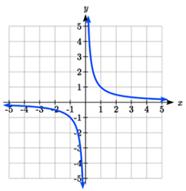
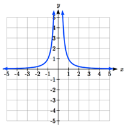
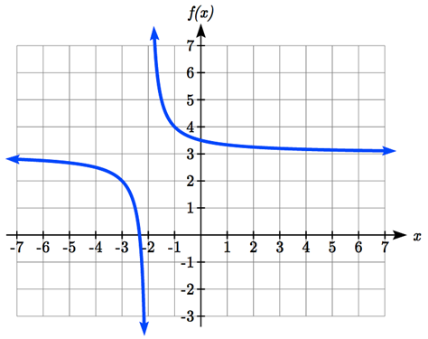
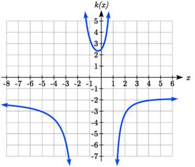
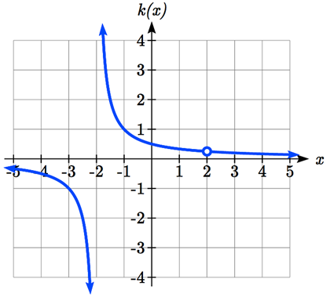
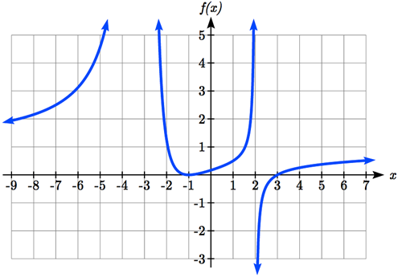
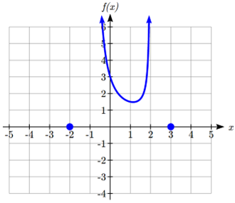
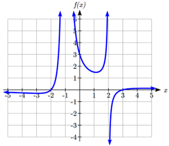
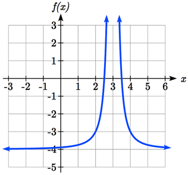

In the previous sections, we have built polynomials of the form \(f(x)=a_{n}x^{n}+a_{n-1}x^{n-1}+\cdots a_{2}x^{2}+a_{1}x+a_{0}\text{.}\) In this section, we explore ratios of these functions, known as rational functions.
Definition3.4.1.Important Topics of this Section.
Inversely proportional; Reciprocal toolkit function
Inversely proportional to the square; Reciprocal squared toolkit function
Horizontal Asymptotes
Vertical Asymptotes
Rational Functions
Finding intercepts, asymptotes, and holes
Given equation sketch the graph
Identifying a function from its graph
Example3.4.2.
You plan to drive 100 miles. Find a formula for the time the trip will take as a function of the speed you drive.
You may recall that multiplying speed by time will give you distance. If we let \(t\) represent the drive time in hours, and \(v\) represent the velocity (speed or rate) at which we drive, then \(vt=\text{distance}\) . Since our distance is fixed at 100 miles, \(vt=100\text{.}\) Solving this relationship for the time gives us the function we desired: \(t=\dfrac{100}{v}=100v^{-1}\text{.}\)
While this type of relationship can be written using the negative exponent, it is more common to see it written as a fraction.
This particular example is one of an inversely proportional relationship – where one quantity is a constant divided by the other quantity, like \(y=\dfrac{5}{x}\text{.}\) Notice that this is a transformation of the reciprocal toolkit function, \(f(x)=\dfrac{1}{x}\text{.}\)
Several natural phenomena, such as gravitational force and volume of sound, behave in a manner inversely proportional to the square of another quantity. For example, the volume, \(V\text{,}\) of a sound heard at a distance \(d\) from the source would be related by \(V=\dfrac{k}{d^2}\) for some constant value \(k\) (\(k\) is determined by several factors such as the material in which the sound is traveling).
These functions are transformations of the reciprocal squared toolkit function \(f(x)=\dfrac{1}{x^2}\) .
We have seen the graphs of the basic reciprocal function and the squared reciprocal function from our study of toolkit functions. These graphs have several important features.

Figure3.4.3.Graph of \(f(x)=\dfrac{1}{x}\)

Figure3.4.4.Graph of \(f(x)=\dfrac{1}{x^2}\)
Let’s begin by looking at the reciprocal function, \(f(x)=\dfrac{1}{x}\text{.}\) As we well know, dividing by zero is never defined, and therefore zero is not in the domain, and so the function is undefined at an input of zero.
However, we can still investigate what happends to the outputs of the function as we let \(x\) get very close to a value of 0.
As the input values approach zero from the left side (taking on very small, negative values), the function values become very large in the negative direction (in other words, they approach negative infinity). We write: as \(x\to 0^{-}, f(x)\to -\infty\text{.}\) The superscript negative sign designates that we approaching 0 from the negative side of the number line, and does not act as an exponent.
As we approach zero from the right side (small, positive input values), the function values become very large in the positive direction (approaching infinity). We write: as \(x\to 0^{+},f(x)\to \infty\text{.}\)
This behavior creates a vertical asymptote. An asymptote is a line that the graph approaches. In this case the graph is approaching the vertical line \(x = 0\) as the input becomes close to zero.
We can also investigate what happens to the output values of the function as we let \(x\) become a very large positive or negative number.
As the value of \(x\) increase without bound (approaches positive infinity), the function values approach 0. As the value of \(x\) decreases without bound (approaches negative infinity), the function values approach 0. Symbolically, we could write: as \(x\to \pm \infty,f(x)\to 0\text{.}\)
Based on this long run behavior and the graph we can see that the function approaches 0, forever getting closer as the inputs become large. This behavior creates a horizontal asymptote. In this case the graph is approaching the horizontal line \(y=0\) as the input becomes very large in the negative and positive directions.
Definition3.4.5.Vertical and Horizontal Asymptotes.
A vertical asymptote of a graph is a vertical line \(x = a\) where the graph tends towards positive or negative infinity as the inputs approach \(a\text{.}\) If \(x=a\) is a vertical asymptote for the function \(f\text{,}\) then as \(x\to a,f(x)\to \pm \infty\text{.}\)
A horizontal asymptote of a graph is a horizontal line \(y=b\) where the function outputs approache the line as the inputs get large. If \(y=b\) is a horizontal asymptote for the function \(f\text{,}\) then as \(x\to \pm \infty,f(x)\to b\text{.}\)
Checkpoint3.4.6.
Use symbolic notation to describe the long run behavior and short run behavior for the reciprocal squared function.
Example3.4.7.
Sketch a graph of the reciprocal function shifted two units to the left and up three units. Identify the horizontal and vertical asymptotes of the graph, if any.
Transforming the graph left 2 and up 3 would result in the function \(f(x)=\dfrac{1}{x+2}+3\text{,}\) or equivalently, by giving the terms a common denominator, \(f(x)=\dfrac{3x+7}{x+2}\text{.}\)
Shifting the toolkit function would give us this graph.

Figure3.4.8.Graph of \(f(x)=\dfrac{3x+7}{x+2}\)
Notice that this equation is undefined at \(x = -2\text{,}\) and the graph also is showing a vertical asymptote at \(x = -2\text{.}\) Specifically, as \(x\to-2^{-},f(x)\to -\infty\text{,}\) and as \(x\to-2^{+},f(x)\to \infty\text{.}\)
As the inputs grow large, the graph appears to be leveling off at output values of 3, indicating a horizontal asymptote at \(y=3\text{.}\) Thus, as \(x\to \pm \infty, f(x)\to3\text{.}\)
Notice that horizontal and vertical asymptotes get shifted left 2 and up 3 along with the function.
Checkpoint3.4.9.
Sketch the graph and find the horizontal and vertical asymptotes of the reciprocal squared function that has been shifted right 3 units and down 4 units.
In the previous example, we shifted a toolkit function in a way that resulted in a function of the form \(f(x)=\dfrac{3x+7}{x+2}\text{.}\) This is an example of a more general rational function.
Definition3.4.10.Rational Function.
A rational function is a function that can be written as the ratio of two polynomials, \(P(x)\) and \(Q(x)\text{.}\)\(f(x)=\dfrac{P(x)}{Q(x)}=\dfrac{a_0+a_1 x+a_2 x^2+\cdots+a_p x^p}{b_0+b_1 x+b_2 x^2+\cdots+b_q x^q}\)
Example3.4.11.
A large mixing tank currently contains 100 gallons of water, into which 5 pounds of sugar have been mixed. A tap will open pouring 10 gallons per minute of water into the tank at the same time sugar is poured into the tank at a rate of 1 pound per minute. Find the concentration (pounds per gallon) of sugar in the tank after \(t\) minutes.
Notice that the amount of water in the tank is changing linearly, as is the amount of sugar in the tank. We can write an equation independently for each:
The concentration, \(C\text{,}\) will be the ratio of pounds of sugar to gallons of water. Letting \(f(t)=C\text{,}\) we get the function \(f(t)=\dfrac{5+t}{100+10t}\text{.}\)
Subsection3.4.2Finding Asymptotes and Intercepts
Given a rational function, as part of investigating the short and long run behavior we are interested in finding any vertical and horizontal asymptotes, as well as finding any vertical or horizontal intercepts, as we have done in the past.
We might notice that, so far, the vertical asymptotes in our examples occur when the denominator has a value of zero: where the function is undefined. With one exception, a vertical asymptote will occur whenever the denominator is zero.
Example3.4.12.
Find the vertical asymptotes of the function \(k(x)=\dfrac{5+2x^2}{2-x-x^2}\text{.}\)
To find the vertical asymptotes, we determine where this function will be undefined by setting the denominator equal to zero:
\begin{equation*}
2-x-x^{2}=0,
\end{equation*}
\begin{equation*}
(2+x)(1-x)=0,
\end{equation*}
\begin{equation*}
x=-2,1.
\end{equation*}
This indicates two vertical asymptotes, \(x=-2\) and \(x=1\text{,}\) which a look at a graph confirms.

Figure3.4.13.Graph of \(k(x)=\dfrac{5+2x^2}{2-x-x^2}\)
The exception to this rule can occur when both the numerator and denominator of a rational function are zero at the same input.
Example3.4.14.
Find the vertical asymptotes of the function \(k(x)=\dfrac{x-2}{x^2-4}\text{.}\)
To find the vertical asymptotes, we determine where this function will be undefined by finding where denominator will be zero. We can do this by factoring: \(k(x)=\dfrac{x-2}{x^2-4}=\dfrac{x-2}{(x-2)(x+2)}\) , so the denominator is zero at \(x=2,-2\text{.}\)
However, the numerator of this function is also equal to zero when \(x = 2\text{.}\) The function will still be undefined at 2, since \(\dfrac{0}{0}\) is still undefined, but if \(x\neq 2\) then \(\dfrac{x-2}{(x-2)(x+2)}=\dfrac{1}{x+2}\text{,}\) which does not have a vertical asymptote at \(x = 2\text{.}\)
The graph of \(k(x)\) will have a vertical asymptote at \(x = -2\text{,}\) but at \(x = 2\) the graph will have a hole: a single point where the graph is not defined, indicated by an open circle.

Figure3.4.15.Graph of \(k(x)=\dfrac{x-2}{x^2-4}\)
Definition3.4.16.Vertical Asymptotes and Holes of Rational Functions.
At points where the denominator of a rational function equals zero and the numerator is not zero, the rational function has a vertical asymptote.
At points where both the numerator and denominator of a rational function equal zero, factor the numerator and denominator and simplify: either the simplified function will have a vertical asymptote (and the original function will as well) or the graph of the original function will have a hole.
To find horizontal asymptotes, we are interested in the behavior of the function as the input grows large, so we consider long run behavior of the numerator and denominator separately. Recall that a polynomial’s long run behavior will mirror that of the leading term. Likewise, a rational function’s long run behavior will mirror that of the ratio of the leading terms of the numerator and denominator functions.
There are three distinct outcomes when this analysis is done:
Case 1: The degree of the denominator > degree of the numerator Example: \(f(x)=\dfrac{3x+2}{x^2+4x-5}\text{.}\) In this case, the long run behavior is \(f(x)\approx \dfrac{3x}{x^2}=\dfrac{3}{x}\text{.}\) This tells us that as the inputs grow large, this function will behave similarly to the function \(g(x)=\dfrac{3}{x}\text{.}\) As the inputs grow large, the outputs of \(g\) will approach zero, resulting in a horizontal asymptote at \(y=0\text{.}\) Thus, as \(x\to \pm \infty, f(x)\to 0\text{.}\)
Case 2: The degree of the denominator < degree of the numerator Example: \(f(x)=\dfrac{3x^2+2}{x-5}\text{.}\) In this case, the long run behavior is \(f(x)\approx \dfrac{3x^2}{x}=3x\text{.}\) This tells us that as the inputs grow large, this function will behave similarly to the function \(g(x)=3x\text{.}\) As the inputs grow large, the outputs will grow and not approach any constant value, so this graph has no horizontal asymptote. Thus, as \(x\to \infty,f(x)\to \infty\text{,}\) and as \(x\to-\infty, f(x)\to -\infty\text{.}\)
Case 3: The degree of the denominator = degree of the numerator Example: \(f(x)=\dfrac{3x^2+2}{x^2+4x-5}\text{.}\) In this case, the long run behavior is \(f(x)\approx \dfrac{3x^2}{x^2}=3\text{.}\) This tells us that as the inputs grow large, this function will behave like the function \(g(x)=3\text{,}\) which is a horizontal line. Thus, as \(x\to \pm \infty, f(x)\infty3\text{,}\) resulting in a horizontal asymptote at \(y=3\text{.}\)
Definition3.4.17.Horizontal Asymptote of Rational Functions.
The horizontal asymptote of a rational function can be determined by looking at the degrees of the numerator and denominator. Given a rational function of the form
If \(q>p\text{:}\)\(f\) has a horizontal asymptote at \(y=0\)
If \(p>q\text{:}\)\(f\) has no horizontal asymptote
If \(p=q\text{:}\)\(f\) has a horizontal asymptote at ratio of leading coefficients, \(y=\dfrac{a_p}{b_q}\text{.}\)
Example3.4.18.
In the sugar concentration problem from earlier, we created the equation \(f(t)=\dfrac{5+t}{100+10t}\text{.}\) Find the horizontal asymptote and interpret it in context of the scenario.
Both the numerator and denominator are linear (degree 1), so since the degrees are equal, there will be a horizontal asymptote at the ratio of the leading coefficients. In the numerator, the leading term is \(t\text{,}\) with coefficient 1. In the denominator, the leading term is \(10t\text{,}\) with coefficient 10. The horizontal asymptote will be at the ratio of these values: so as \(t\to \infty, f(t)\to \dfrac{1}{10}\text{.}\) This function will have a horizontal asymptote at \(C=\dfrac{1}{10}\text{.}\) This tells us that as the input gets large, the output values will approach \(\dfrac{1}{10}\text{,}\) and in context, this means that as more time goes by, the concentration of sugar in the tank will approach one tenth of a pound of sugar per gallon of water or \(\dfrac{1}{10}\) pounds per gallon.
Example3.4.19.
Find the horizontal and vertical asymptotes of the function \(f(x)=\dfrac{(x-2)(x+3)}{(x-1)(x+2)(x-5)}\text{.}\)
First, note this function has no inputs that make both the numerator and denominator zero, so there are no potential holes. The function will have vertical asymptotes when the denominator is zero, causing the function to be undefined. The denominator will be zero at \(x = 1, -2, \text{ and }5\text{,}\) indicating vertical asymptotes at these values.
The numerator has degree 2, while the denominator has degree 3. Since the degree of the denominator is greater than that of the numerator, the denominator will grow faster than the numerator, causing the outputs to tend towards zero as the inputs get large, and so as \(x\to \pm \infty, f(x)\to0\text{.}\) This function will have a horizontal asymptote at \(y=0\text{.}\)
Checkpoint3.4.20.
Find the vertical and horizontal asymptotes of the function \(f(x)=\dfrac{(2x-1)(2x+1)}{(x-2)(x+3)}\text{.}\)
Subsection3.4.3Intercepts
As with all functions, a rational function will have a vertical intercept when the input is zero, if the function is defined at zero. It is possible for a rational function to not have a vertical intercept if the function is undefined at zero, which will happen if \(x\) is a factor of the denominator (such as \(f(x)=\dfrac{1}{x}\)).
Likewise, a rational function will have horizontal intercepts at the inputs that cause the output to be zero (unless that input corresponds to a hole). It is possible there are no horizontal intercepts either. Since a fraction is only equal to zero when the numerator is zero, horizontal intercepts will occur when the numerator of the rational function is equal to zero.
Example3.4.21.
Find the horizontal and vertical intercepts of \(f(x)=\dfrac{(x-2)(x+3)}{(x-1)(x+2)(x-5)}\text{.}\)
We can find the vertical intercept by evaluating the function at zero: \(f(0)=\dfrac{(0-2)(0+3)}{(0-1)(0+2)(0-5)}=\dfrac{-6}{10}=\dfrac{-3}{5}\text{.}\) So, the vertical intercept of \(f\) is the point \((0, \dfrac{-3}{5}\text{.}\)
The horizontal intercepts will occur when the function is equal to zero: \(0=\dfrac{(x-2)(x+3)}{(x-1)(x+2)(x-5)}\text{.}\) This will only be true when the numerator is zero: \(0=(x-2)(x+3)\text{,}\) when \(x=2, -3.\) Thus, the horizontal of \(f\) occur at \((2,0)\) and \((-3,0)\text{.}\)
Checkpoint3.4.22.
Given the reciprocal squared function that is shifted right 3 units and down 4 units, write this as a rational function and find the horizontal and vertical intercepts and the horizontal and vertical asymptotes.
Subsection3.4.4Graphical Behavior at Horizontal Intercepts and Vertical Asymptotes
As with polynomials, factors of the numerator may have integer powers greater than one. However, the effect on the shape of the graph at those intercepts is the same as we saw with polynomials: if the factor giving the intercept has an odd power, the graph passes through the axis; if the factor has an even power, the graph will bounce off the axis at that intercept. The behavior at vertical asymptotes also depends on the power on the factor in the denominator.
Definition3.4.23.Graphical Behavior of Rational Functions at Vertical Asymptotes.
If a rational function contains a factor of the form \((x-h)^{p}\) in the denominator (after canceling with possible factors of \(x-h\) in the numerator), the behavior near the asymptote \(x=h\) is determined by the power on the factor.
If \(p\) is odd, then on one side of the asymptote the graph will head towards positive infinity and on the other side of the asymptote the graph will head towards negative infinity.
If \(p\) is even, the graph either heads toward positive infinity on both sides of the vertical asymptote, or heads toward negative infinity on both sides.
For example, the graph of \(f(x)=\dfrac{(x+1)^2 (x-3)}{(x+3)^2 (x-2)}\) is shown here:

Figure3.4.24.
At the horizontal intercept \(x = -1\) corresponding to the \((x+1)^{2}\) factor of the numerator, the graph bounces at the intercept, consistent with the quadratic nature of the factor.
At the horizontal intercept \(x = 3\) corresponding to the \(x-3\) factor of the numerator, the graph passes through the axis as we’d expect from a linear factor. At the vertical asymptote \(x = -3\) corresponding to the \((x+3)^{2}\) factor of the denominator, the graph heads towards positive infinity on both sides of the asymptote, consistent with the behavior of the \(\dfrac{1}{x^2}\) toolkit function. At the vertical asymptote \(x = 2\) corresponding to the \(x-2\) factor of the denominator, the graph heads towards positive infinity on the left side of the asymptote and towards negative infinity on the right side, consistent with the behavior of the \(\dfrac{1}{x}\) toolkit function.
Example3.4.25.
Sketch a graph of \(f(x)=\dfrac{(x+2)(x-3)}{(x+1)^2 (x-2)}\text{.}\)
We can start our sketch by finding intercepts and asymptotes. Evaluating the function at zero gives the vertical intercept: \(f(0)=\dfrac{(0+2)(0-3)}{(0+1)^2 (0-2)}=3\text{.}\)
Looking at when the numerator of the function is zero, we can determine the graph will have horizontal intercepts at \(x = -2\) and \(x = 3\text{.}\) At each, the behavior will be linear, with the graph passing through the intercept.
Looking at when the denominator of the function is zero, we can determine the graph will have vertical asymptotes at \(x = -1\) and \(x = 2\text{.}\)
Finally, the degree of denominator is larger than the degree of the numerator, telling us this graph has a horizontal asymptote at \(y = 0\text{.}\) To sketch the graph, we might start by plotting the three intercepts. Since the graph has no horizontal intercepts between the vertical asymptotes, and the vertical intercept is positive, we know the function must remain positive between the asymptotes, letting us fill in the middle portion of the graph. So far we have the following graph as our sketch.

Figure3.4.26.Partial sketch of \(f(x)=\dfrac{(x+2)(x-3)}{(x+1)^2 (x-2)}\)
Since the factor associated with the vertical asymptote at \(x = -1\) was squared, we know the graph will have the same behavior on both sides of the asymptote. Since the graph heads towards positive infinity as the inputs approach the asymptote on the right, the graph will head towards positive infinity on the left as well. For the vertical asymptote at \(x = 2\text{,}\) the factor was not squared, so the graph will have opposite behavior on either side of the asymptote.
After passing through the horizontal intercepts, the graph will then level off towards an output of zero, as indicated by the horizontal asymptote. This gives us the following graph for \(f\text{:}\)

Figure3.4.27.Complete graph of \(f(x)=\dfrac{(x+2)(x-3)}{(x+1)^2 (x-2)}\)
Checkpoint3.4.28.
Given the function \(f(x)=\dfrac{(x+2)^2 (x-2)}{2(x-1)^2 (x-3)}\text{,}\) use the characteristics of polynomials and rational functions to describe its behavior and sketch the function.
Since a rational function written in factored form will have a horizontal intercept where each factor of the numerator is equal to zero, we can form a numerator that will pass through a set of horizontal intercepts by introducing a corresponding set of factors. Likewise, since the function will have a vertical asymptote where each factor of the denominator is equal to zero, we can form a denominator that will produce the vertical asymptotes by introducing a corresponding set of factors.
Definition3.4.29.Writing Rational Functions from Intercepts and Asymptotes.
If a rational function has horizontal intercepts at \(x=x_{1},x_{2},\dots,x_{n}\text{,}\) and vertical asymptotes at \(x=v_{1},v_{2},\dots,v_{m}\) then the function can be written in the form:
where the powers \(p_{i}\) or \(q_{i}\) on each factor can be determined by the behavior of the graph at the corresponding intercept or asymptote, and the stretch factor \(a\) can be determined given a value of the function other than at a horizontal intercept, or by the horizontal asymptote if it is nonzero.
Example3.4.30.
Write a possible equation for the rational function graphed here.
Figure3.4.31.
The graph appears to have horizontal intercepts at \(x = -2\) and \(x = 3\text{.}\) At both, the graph passes through the intercept, suggesting linear factors.
The graph has two vertical asymptotes. The one at \(x = -1\) seems to exhibit the basic behavior similar to \(\dfrac{1}{x}\text{,}\) with the graph heading toward positive infinity on one side and heading toward negative infinity on the other. The vertical asymptote at \(x = 2\) is exhibiting a behavior similar to \(\dfrac{1}{x^2}\text{,}\) with the graph heading toward negative infinity on both sides of the asymptote.
Utilizing this information indicates a function of the form: \(f(x)=\dfrac{a(x+2)(x-3)}{(x+1)(x-2)^2}\text{.}\)
To find the stretch factor, we can use another clear point on the graph, such as the vertical intercept \((0,-2)\text{:}\)\(-2=\dfrac{a(0+2)(0-3)}{(0+1)(0-2)^2}\text{,}\) so \(-2=\dfrac{-6a}{4}.\) Thus, \(a=\dfrac{-8}{-6}=\dfrac{4}{3}\text{.}\)
This gives us a final function of \(f(x)=\dfrac{4(x+2)(x-3)}{3(x+1)(x-2)^2}\text{.}\)
Checkpoint3.4.32.
[Exercise Answers]
Long run behavior, as \(x\to \pm \infty,f(x)\to0\text{.}\) Short run behavior, as \(x\to0,f(x)\to \infty\) (there are no horizontal or vertical intercepts).
The function and the asymptotes are shifted 3 units right and 4 units down. As \(x\to3, f(x)\to \infty\) and as \(x\to \pm \infty,f(x)\to-4\text{.}\)
Vertical asymptotes at \(x = 2\) and \(x = -3\text{;}\) horizontal asymptote at \(y = 4\text{.}\)

Figure3.4.33.
For the transformed reciprocal squared function, we find the rational form. \(f(x)=\dfrac{1}{(x-3)^2}-4=\dfrac{1-4(x-3)^2}{(x-3)^2}=\dfrac{1-4(x^2-6x+9)}{(x-3)(x-3)}=\dfrac{-4x^2+24x-35}{x^2-6x+9}\text{.}\) Since the numerator is the same degree as the denominator we know that as \(x\to \pm\infty,f(x)\to-4\text{.}\) So \(y=-4\) is the horizontal asymptote. Next, we set the denominator equal to zero to find the vertical asymptote at \(x = 3\text{,}\) so as \(x\to3, f(x)\to \infty\text{.}\) We set the numerator equal to 0 and find the horizontal intercepts are at \((2.5,0)\) and \((3.5,0)\text{,}\) then we evaluate \(f(0)\) and the vertical intercept is at \((0,\dfrac{-35}{9})\text{.}\)
Horizontal asymptote at \(y = 1/2\text{.}\) Vertical asymptotes are at \(x = 1\text{,}\) and \(x = 3\text{.}\) Vertical intercept at \((0, \dfrac{4}{3})\text{,}\) Horizontal intercepts \((2, 0)\) and \((-2, 0)\text{.}\)\((-2, 0)\) is a double zero and the graph bounces off the axis at this point. \((2, 0)\) is a single zero and crosses the axis at this point.
Figure3.4.34.Graph of \(f(x)=\dfrac{(x+2)^2 (x-2)}{2(x-1)^2 (x-3)}\)
![A graph that starts out flat below the y-axis, then increases, passing through the x-axis at negative 2, then approaches infinity as x approaches a vertical asymptote at x=negative 1. To the right of the asymptote, the graph increases from negative infinity, passes the y-axis at y= negative 2, then decreases towards infinity as x approaches another vertical asymptote at x=2. To the right of this asymptote the graph increases from negative infinity, passes through the x-axis at x=3, increases slightly before decreasing slowly towards the x-axis.](external/C3S4Image9.png)